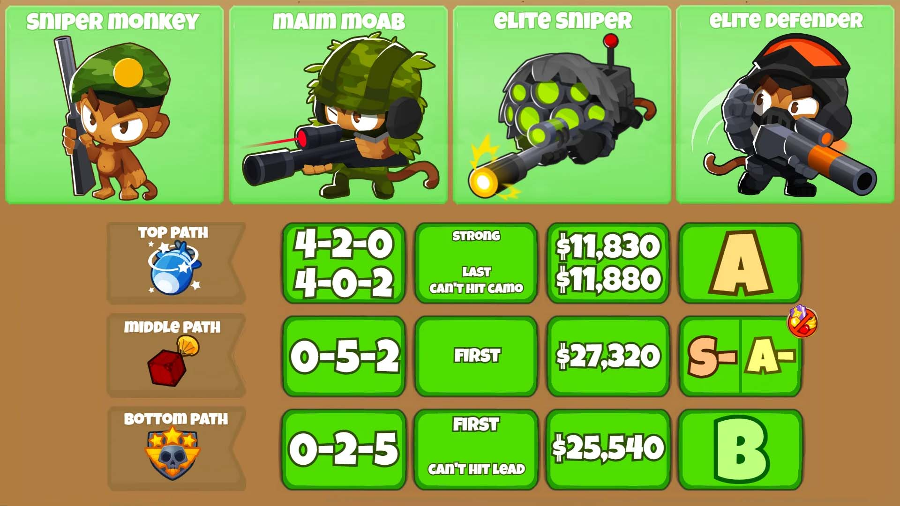
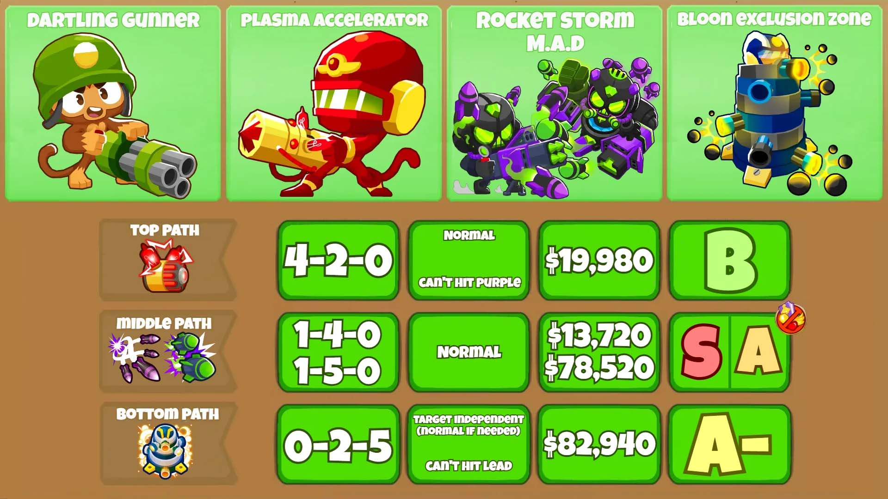
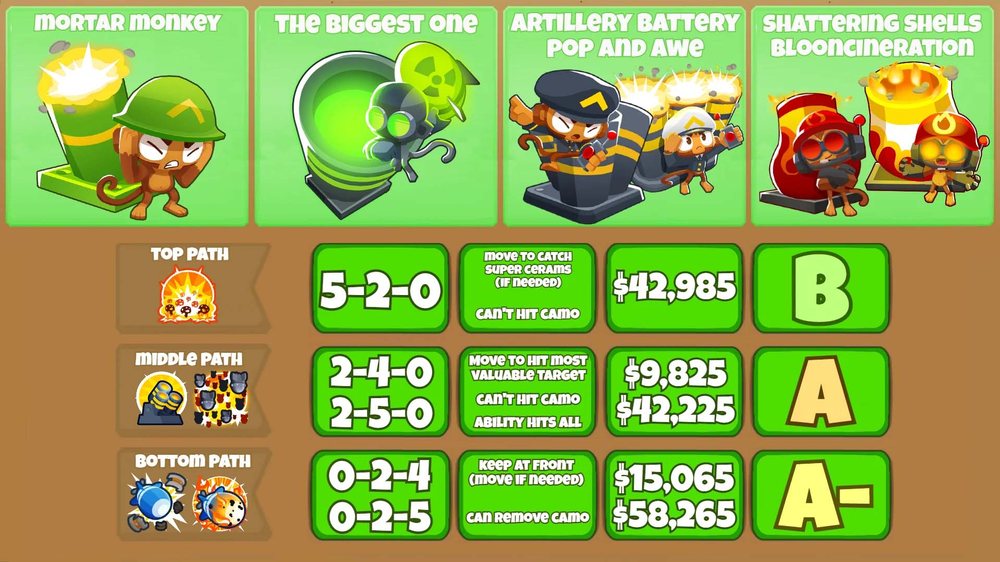
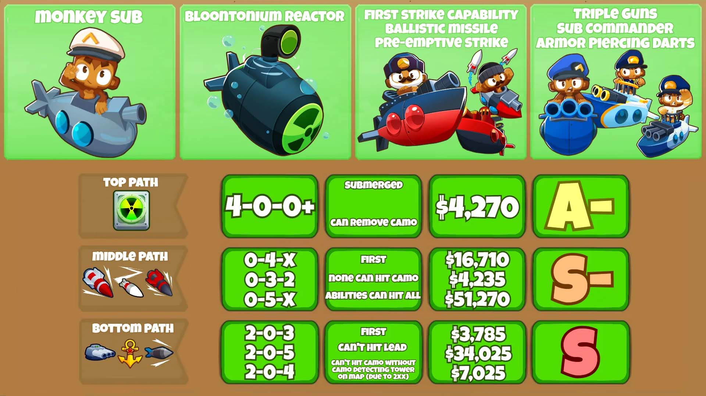
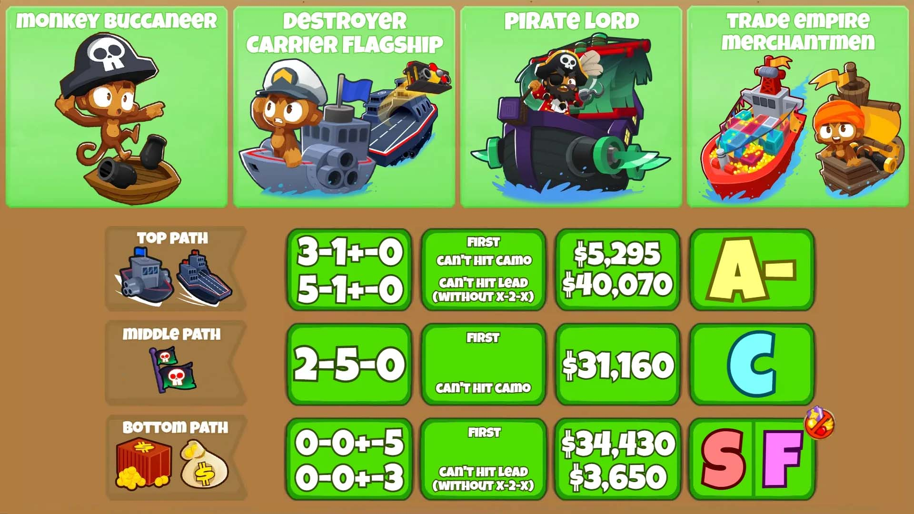
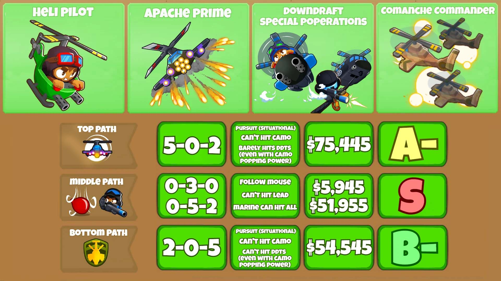
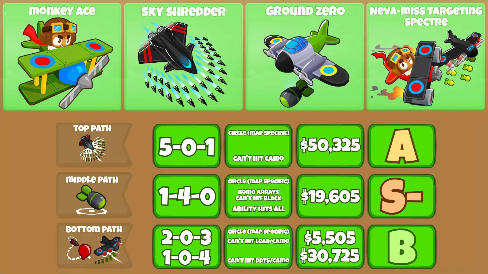

Monos Militares
En esta página veremos más a fondo cada mono militar de Bloons TD 6, el objetivo de esta página es poder entender las habilidades y utilidades de cada mono y veremos:
- Sus caminos o mejoras más optimas (Por ejemplo: 5-2-0 se refiere a mejorar el primer camino al nivel 5, el segundo a 2 y el tercero no mejorarlo).
- El costo total de los caminos mencionados.
- A que globos deben atacar (First, Last, strong, etc.) y cuales no pueden atacar (Camo, Lead, y ceramic que son los Camuflados, blindados y ceramicos respectivamente).
- Su rango que va desde la D siendo el rango mas bajo hasta S siendo este el rango mas alto.
- Una descripcion y explicación de los monos.
*NOTA: Los juegos no estan completamente traducidos al español por lo que en esta guía hay información en ingles para que sea más fácil de replicar en el juego.*
Mono Francotirador
El Mono Francotirador es una torre extremadamente poderosa que puede causar daño global a los globos al tener rango infinito. El Mono Francotirador no requiere ninguna ubicación especial ya que no perderá ningún daño de ataque si se coloca más lejos de los globos, por lo que lo más importante a tener en cuenta a la hora de colocarlo es hacerlo donde este tenga mayor visibilidad. Este mono en su version base cuenta con un precio de $350, una perforación de 2 y 1 de daño aunque tiene una velocidad de ataque baja.
Mono Artillero
El Mono Artilleroes una excelente opción para que los jugadores lo coloquen si buscan daño global. Los jugadores podrán controlar el Dartling Gunner moviendo su cursor para disparar una línea recta de dardos que dañen el primer globo que toque, aunque los jugadores también tienen la opción de bloquear el Dartling Gunner en su lugar si no quieren microgestionar. la ubicación de destino. Esta torre en su version base cuenta con un precio de $1000, una perforación de 1 y 1 de daño.
Mono Mortero
Los Monos Morteros tienen la capacidad de infligir daño en area, sin embargo, disparan con bastante lentitud en comparación a otras Torres, lo que hace que su daño sea bastante irregular o ineficiente en comparación con otras Torres.Esta torre no requiere una ubicación específica ya que tiene alcance global desde cualquier lugar del mapa y nosotros podemos elgir adonde va a atcar. Esta torre en su version base cuenta con un precio de $1000, una perforación de 1 y 1 de daño.
Mono Submarino
El Mono Submarino es una torre acuatica que no solo puede convertirse en una torre de ataque de gran daño, sino que los jugadores también pueden mejorar el Mono Submarino para convertirlo en una torre de soporte completo que revele Bloons Camufaldos para todas las torres. Dependiendo de lo que los jugadores intenten lograr, la ubicación del Mono Submario difiere, si usan el camino 1 deben colocar esta torre al principio del mapa para sacarle el camuflaje a todos los Bloons mientras que para los caminos 2 y 3 deben colorlarlas donde éstas tengan mas visibilidad. Esta torre en su version base cuenta con un precio de $325, una perforación de 1 y 1 de daño.
Mono Bucanero
El Mono Bucanero es, con diferencia, el tipo de torre de agua más fuerte que los jugadores pueden colocar, aunque son muy caras. Los Monos Bucaneros causan una gran cantidad de daño y pueden mejorarse para tener daño global, centrarse en sacar globos de clase MOAB del cielo o proporcionar a los jugadores algunos ingresos, aunque no tienen tanto impacto como otras Torres basadas en dinero. Esta torre en su version base cuenta con un precio de $500, una perforación de 1 y 1 de daño.
Mono Helicoptero
El Mono Helicoptero El Heli Pilot brinda al jugador una amplia cantidad de soporte, lo que le permite ubicarlo donde quieran, ya sea bloqueándolo en su lugar o haciendo que siga el mouse. Los Heli Pilots son muy interesantes ya que también se pueden usar para transportar torres a otras partes del mapa y pueden ayudar a los jugadores a ganar más vidas que las que tenía el jugador al principio. Este mono en su version base cuenta con un precio de $1600, una perforación de 3 y 1 de daño
Mono Avion
El Mono Avion es una torre muy interesante de colocar y, si bien puede proporcionar a los jugadores una gran cantidad de daño global, el Monkey Ace es una torre poco confiable ya que el Mono Avion debe colocarse en una excelente ubicación o este perdera mucho daño al perder muchos dardos, Este mono en su version base cuenta con un precio de $900, una perforación 5 por dardo y 1 de daño